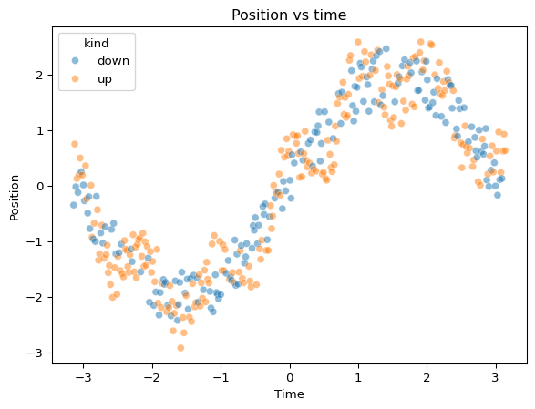

Pendulum Position Modelling (Univariate Regression Case)
Author
Christoffer Boye Tvedte
1 Executive Summary
This mini-case models the relationship between time and a pendulum’s y-position using a univariate regression approach. I compare a linear baseline to a cubic spline model with Ridge regularization, and tune spline smoothness using cross-validation.
Best-performing model (test split): Tuned Spline + Ridge
Performance (test split): RMSE 0.325, MAE 0.297, R² 0.9423
Key insight: The relationship between time and position is highly non-linear, and the spline model captures this structure much better than linear regression. Tuning the spline parameters further improves performance, demonstrating the importance of model flexibility and regularization in capturing complex patterns in data.
Practical relevance: This case illustrates how to model non-linear relationships in a univariate regression setting, and the benefits of using splines and regularization to achieve better predictive performance.
2 Problem Statement
Many real-world processes evolve non-linearly over time. The objective of this case is to predict pendulum position from time using a univariate model that is both accurate and stable.
A good solution should:
achieve low prediction error (RMSE/MAE), and
capture the non-linear relationship between time and position effectively.
3 Data and context
The data set positions.csv contains the following variables.
Variable
Description
time
Time of measurement, rescaled to \([-\pi, \pi]\).
kind
Type of intervention, up (1) or down (0).
position
\(y\)-position of pendulum. Target.
I will analyze the data using cubic splines and regression with carefully chosen transformations.
Code
import numpy as npimport pandas as pdimport matplotlib.pyplot as pltimport seaborn as snsfrom sklearn.model_selection import train_test_split, KFold, GridSearchCVfrom sklearn.pipeline import Pipelinefrom sklearn.preprocessing import SplineTransformer, StandardScalerfrom sklearn.linear_model import Ridge, LinearRegressionfrom sklearn.metrics import mean_squared_error, mean_absolute_error, r2_scorenp.random.seed(42)
Rows with missing values were removed for simplicity. Since this is a modelling exercise focused on the functional relationship between time and position, the remaining dataset is sufficient for stable estimation.
plt.figure()sns.scatterplot(data=df_clean, x="time", y="position", hue="kind", alpha=0.5)plt.title("Position vs time")plt.xlabel("Time")plt.ylabel("Position")plt.show()

Figure 1: Position over time, coloured by movement direction (kind).
The scatter plot reveals a clear non-linear relationship between time and position, with distinct patterns for the ‘up’ and ‘down’ movements. This suggests that a linear model may not capture the underlying dynamics effectively, motivating the use of cubic splines to model the non-linearity in the data.
The linear regression model captures the general trend but fails to account for the non-linear patterns in the data, resulting in a relatively high RMSE and low R². This motivates exploring more flexible models that can capture the complex relationship between time and position, such as cubic splines.
7 Cubic spline regression with Ridge regularization
The cubic spline regression model significantly outperforms the linear regression baseline, achieving a much lower RMSE and higher R². This indicates that the spline model is better able to capture the non-linear relationship between time and position, providing a more accurate fit to the data. ### Visualization of cubic spline regression predictions
Figure 3: Spline + Ridge fit captures non-linear structure in position over time.
The visualization of the cubic spline regression fit shows that it captures the complex, non-linear patterns in the data much more effectively than the linear model. The spline model closely follows the oscillations in position over time, demonstrating its ability to model the underlying dynamics of the pendulum’s movement.
Figure 4: Tuned spline model fit (Ridge-regularized) captures non-linear structure.
The tuned spline model achieves the best performance, with the lowest RMSE and highest R² among the three models. This demonstrates that careful tuning of the spline parameters and regularization strength can lead to significant improvements in predictive accuracy for this univariate regression task. The linear regression model performs the worst, confirming that it is not suitable for capturing the non-linear relationship in the data. The default spline model performs better than linear regression but is outperformed by the tuned version, highlighting the importance of hyperparameter optimization in achieving optimal model performance.
10 Limitations and future directions
10.1 Limitations
This is a univariate model (position ~ f(time)), so it ignores other potentially informative predictors.
The train/test split does not respect time ordering; if this were a true time series setting, a time-based split would be more appropriate.
The spline fit depends on the choice of knots and regularization; results may vary with different tuning ranges. ### Future directions
Use a time-based validation (e.g., train on earlier time, test on later time).
Fit separate curves for kind = up vs kind = down, or include kind as an interaction (e.g., separate spline per group).
Explore other non-linear models (e.g., Gaussian Processes, Random Forests) for comparison.